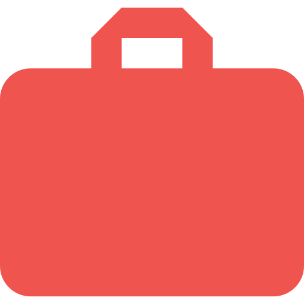

Meu Perfil
Meu Perfil
Sou extremamente interessado pela area de informatica e tecnologias e também matematica. Actualmente estou em formaçao intensivo de 3 mêses em Simplon Roubaix em integrator web. Tive opurtunidade de desenvolver varios sites de internet, de A à Z e sempre 100% responsivo. Nao hesite de descobrir minhas criaçoes e também minhas reproduçoes. Estou a procura de estagio/trabalho de Integrator Web-Font à partir de Junho 2017. Se o meu perfil vous interessa, contata-me.
 Formaçao
Formaçao
Formaçao Integrator Web
Formaçao intensivo de 3 meses em integrator web, html5, css3, Javascript (bases), com vista a ser capaz de criar sites de internet.
Simplom Roubaix - France
Curso DEFI (départamento de ensino françes internationale)
Curso de Lingua e Cultura Françesa com Diplôma Universitario de estudos Françeses - Nivel B1.
Universidade Lille 3 - França
Segundo ano em Licenciatura de Informatica
Segundo ano em Licenciatura Informatica, programaçao, matematica, reparaçao de computadores, redes de internet.
Universidade Jean Piaget - Cabo Verde
Ensino Secundario Economico Social
Ensino secundario Economico Social.
ESAD - Cabo Verde
 Expériences Professionnelles
Call Center
Call center
Cv Movel - Cabo Verde
Tecnico de manutençao informatica
Reparacao de problemas informaticos
JPS - Cabo Verde
Baixar meu Curriculum